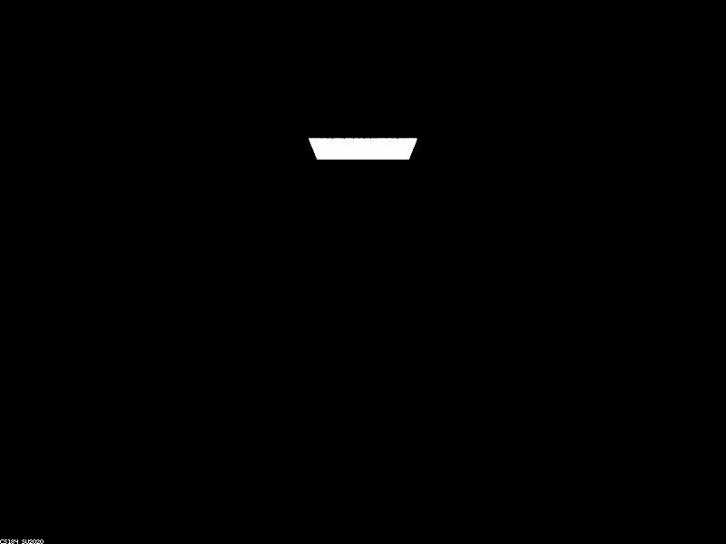
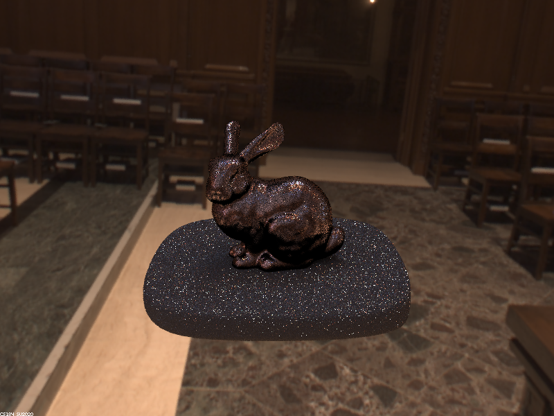

Part 1. Mirror and Glass Materials
Show a sequence of six images of scene `CBspheres.dae` rendered with `max_ray_depth` set to 0, 1, 2, 3, 4, 5, and 100. The other settings should be at least 64 samples per pixel and 4 samples per light. Make sure to include all screenshots.
|

|
|
|
|
|
|
|
|
|
||
Point out the new multibounce effects that appear in each image.
0 depth: Light from light source only.
1 depth: Reflection of directly emitted light on both balls.
2 depth: Direct lighting from walls appears on the reflective ball. Very faint reflection of the room appears on the right refractive ball.
3 depth: Ceiling appears on left reflective ball. Refracted image of the corner of the room appears on the right refractive ball. Previous reflection on the right ball becomes invisible. A hole in the shadow emerges below the right ball.
4 depth: The right ball's image on the left ball now shows a refraction of the room. A spot of light appears on the right wall.
5 depth: No/minimal changes.
100 depth: No/minimal changes.
Explain how these bounce numbers relate to the particular effects that appear. Make sure to include all screenshots.
With 0 bounces, the only light that hits the camera is the light that comes directly from the light source (camera->light).
With 1 bounce, light that bounces off the walls and floors is added (camera->wall/floor->light). Additionally, some camera rays bounce off the balls and are directed to the light, producing the white reflection of the light that is visible at 1 max ray depth (camera->ball->light).
With 2 bounces, reflections of the room on the balls become possible (camera->ball->wall->light).
At 3 bounces, the ceiling becomes visible on the reflective ball (camera->ball->ceiling→wall/floor->light), and the refracted image of the room finally appears (camera->ball entry->ball exit->wall->light).
At 4 bounces, the right ball's appearance on the left ball's reflection correctly shows the refraction of the room. (camera->left ball->right ball entry->right ball exit->wall->light)
At higher numbers of bounces, we reach diminishing returns and the additional effects become insignificant.
Part 2. Microfacet Material
Show a screenshot sequence of 4 images of scene `CBdragon_microfacet_au.dae` rendered with $\alpha$ set to 0.005, 0.05, 0.25 and 0.5. The other settings should be at least 128 samples per pixel and 1 samples per light. The number of bounces should be at least 5. Describe the differences between different images. Note that, to change the $\alpha$, just open the .dae file and search for `microfacet`.
|
|
|
|
|
|
Show two images of scene `CBbunny_microfacet_cu.dae` rendered using cosine hemisphere sampling (default) and your importance sampling. The sampling rate should be fixed at 64 samples per pixel and 1 samples per light. The number of bounces should be at least 5. Briefly discuss their difference.
|
|
|
Importance sampling improves the reflection quality by making the reflection on the bunny less noisy. There are visibly less dark spots on the bunny's reflection of the room in the image made using importance sampling.
Show at least one image with some other conductor material, replacing `eta` and `k`. Note that you should look up values for real data rather than modifying them arbitrarily. Tell us what kind of material your parameters correspond to.
Part 3. Environment Lightl
Pick one *.exr* file to use for all subparts here. Include a converted *.jpg* of it in your website so we know what map you are using.
In a few sentences, explain the ideas behind environment lighting (i.e. why we do it/how it works).
Environment lighting helps to make a scene more realistic by simulating radiance from an environment surrounding the scene. In real settings, objects are not surrounded by black voids but are enclosed by outdoor spaces and rooms, so simulating the effect they have on lighting objects adds to the realism. It works by sampling the hemisphere around a camera ray's intersection with an object, and mapping the direction of the reflected ray to a radiance value from the environment.
Show the *probability_debug.png* file for the *.exr* file you are using, generated using the `save_probability_debug()` helper function after initializing your probability distributions.
Use the `bunny_unlit.dae` scene and your environment map *.exr* file and render two pictures, one with uniform sampling and one with importance sampling. Use 4 samples per pixel and 64 samples per light in each. Compare noise levels. Make sure to include all screenshots.
There is significantly more noise in the image produced by uniform sampling of environment light versus importance sampling.
Use a different image (if you did part 2, we recommend `bunny_microfacet_cu_unlit.dae`) and your environment map *.exr* file and render two pictures, one with uniform sampling and one with importance sampling. Use 4 samples per pixel and 64 samples per light in each. Compare noise levels. Make sure to include all screenshots.

Again, there is significantly more noise in the image produced by uniform sampling of environment light versus importance sampling.
Part 4. Depth of Field
For these subparts, we recommend using a microfacet BSDF scene to show off the cool out of focus effects you can get with depth of field!In a few sentences, explain the differences between a pinhole camera model and a thin-lens camera model.
In a pinhole camera model, a small amount of light from the scene passes through an infinitesimally small pinhole, on the other side of which is a sensor. Each point on the sensor corresponds to exactly one possible light ray from the scene due to the size of the pinhole. In a thin-lens model, a thin lens is used to refract multiple rays of light from each point on the scene which converge to an image on the other side. This means that the sensor on the other side of the lens can receive radiance from any point on the lens rather than a single ray through the tiny pinhole.
A major consequence that arises from this difference between the models is that all points in the pinhole model appear focused whereas the thin lens model creates a depth of field in which some parts of the scene appear to be in focus. Since points on the sensor can receive light from multiple points on the scene, it is not necessary that they are the same point and the result is a blurring effect when they are not.
Show a "focus stack" where you focus at 4 visibly different depths through a scene. Make sure to include all screenshots.
|
|

|
|
|
|
Show a sequence of 4 pictures with visibly different aperture sizes, all focused at the same point in a scene. Make sure to include all screenshots.
|
|
|
|
|
|